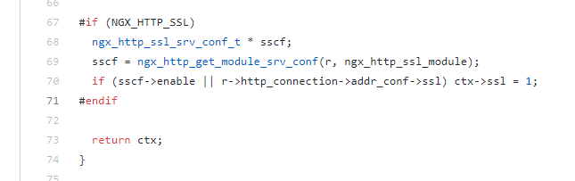

以前一直以为用 nginx 配谷歌以及谷歌学术的镜像站会很麻烦, 就一直没去配, 直到昨天 evi0s 给我发了个 nginx module 我才知道有人已经造好了轮子
只需要给 nginx 安装 ngx_http_google_filter_module 模块即可
个人感觉官方给的教程实在是太麻烦了, 而且比较老旧还需要重编译 nginx, 我 vps 上的 nginx 直接使用的 nginx 官方容器, 因此决定将该模块及其依赖项编译为动态模块, 挂载进容器内动态加载
编译过程和 https://blog.plusls.com/linux/nginx/compile-nginx-dynamic-modules/ 基本一致
下载 nginx 以及模块源码 目前 nginx 容器的 nginx 版本为 1.17.9, 编译时使用了 ngx_http_google_filter_module 的 dev 分支
官方文档提及了该模块依赖 ngx_http_substitutions_filter_module, 因此也需要将 ngx_http_substitutions_filter_module 编译为动态模块
1 2 3 4 wget https://github.com/nginx/nginx/archive/release-1.17.9.tar.gz tar -xvf release-1.17.9.tar.gz git clone https://github.com/yaoweibin/ngx_http_substitutions_filter_module.git git clone -b dev https://github.com/cuber/ngx_http_google_filter_module
源码下载完后目录结构如下:
1 2 3 4 5 6 7 8 9 10 11 12 13 14 15 16 17 18 19 20 21 22 23 24 25 26 27 28 plusls@us1:~/nginx-source$ tree -L 2 . ├── nginx-release-1.17.9 │ ├── auto │ ├── conf │ ├── contrib │ ├── docs │ ├── Makefile │ ├── misc │ ├── objs │ └── src ├── ngx_http_google_filter_module │ ├── config │ ├── LICENSE │ ├── README.md │ ├── README.zh-CN.md │ └── src ├── ngx_http_substitutions_filter_module │ ├── CHANGES │ ├── config │ ├── doc │ ├── ngx_http_subs_filter_module.c │ ├── README │ ├── test │ └── util └── release-1.17.9.tar.gz 14 directories, 10 files
安装依赖项 可以自行下载源码安装, Debian 可以直接 apt 安装
1 sudo apt install make gcc zlib1g-dev libpcre3-dev libssl-dev
源码下载 (可选)
1 2 3 wget "https://www.openssl.org/source/openssl-1.1.1c.tar.gz" wget "http://ftp.cs.stanford.edu/pub/exim/pcre/pcre-8.38.tar.gz" wget "http://zlib.net/fossils/zlib-1.2.8.tar.gz"
上面给出的依赖版本可能有点老旧, 可自行去库的官网下载最新版
在编译新版 nginx 时如果使用 openssl 1.0.1 会编译报错, 同时 openssl 1.1.1e 貌似存在 bug 会导致模块工作异常 (evi0s 测出来的), 编译 openssl 时需要安装 g++
编译模块 进入 nginx 源码目录后, 执行 configure 脚本
1 2 3 4 5 ./auto/configure --with-compat \ --add-dynamic-module=../ngx_http_substitutions_filter_module \ --add-dynamic-module=../ngx_http_google_filter_module \ --with-http_ssl_module make modules
关于参数 --with-http_ssl_module 在模块的文档中并没有明确书写需要添加该参数, 不加该参数是也能编译成功, 但是模块无法正常处理 ssl 流量
这是由于该模块在源码中用宏判断了一下当前的编译参数, 如果没加 --with-http_ssl_module 参数则不会启用 ssl 相关功能

只有启用了后相关功能才能正常工作, 不然会 501 或者 302 301 重定向次数过多
编译完成后 ngx_http_google_filter_module.so 和 ngx_http_subs_filter_module.so 生成在 objs 目录下
1 2 3 4 5 6 7 8 9 10 11 12 13 14 15 16 plusls@us1:~/nginx-source/nginx-release-1.17.9$ ls -l objs total 556 drwxrwxr-x 4 plusls plusls 4096 Mar 27 13:47 addon -rw-rw-r-- 1 plusls plusls 17601 Mar 27 13:47 autoconf.err -rw-rw-r-- 1 plusls plusls 45379 Mar 27 13:47 Makefile -rw-rw-r-- 1 plusls plusls 7823 Mar 27 13:47 ngx_auto_config.h -rw-rw-r-- 1 plusls plusls 657 Mar 27 13:47 ngx_auto_headers.h -rw-rw-r-- 1 plusls plusls 303 Mar 27 13:47 ngx_http_google_filter_module_modules.c -rw-rw-r-- 1 plusls plusls 44688 Mar 27 13:48 ngx_http_google_filter_module_modules.o -rwxrwxr-x 1 plusls plusls 258640 Mar 27 13:48 ngx_http_google_filter_module.so -rw-rw-r-- 1 plusls plusls 367 Mar 27 13:47 ngx_http_subs_filter_module_modules.c -rw-rw-r-- 1 plusls plusls 44792 Mar 27 13:48 ngx_http_subs_filter_module_modules.o -rwxrwxr-x 1 plusls plusls 107880 Mar 27 13:48 ngx_http_subs_filter_module.so -rw-rw-r-- 1 plusls plusls 6043 Mar 27 13:47 ngx_modules.c drwxrwxr-x 9 plusls plusls 4096 Mar 27 13:47 src plusls@us1:~/nginx-source/nginx-release-1.17.9$
配置 nginx 编译完成后将生成的模块拷贝到响应的目录下
我在服务器上使用的 nginx 容器目录结构如下:
1 2 3 4 5 6 7 8 9 10 11 12 13 14 15 16 17 18 19 20 21 22 23 24 25 26 27 plusls@us1:~/nginx$ tree . ├── auth │ └── default.htpasswd ├── conf.d │ ├── google.conf │ └── v2ray.conf ├── docker-compose.yml ├── log │ └── . ├── modules │ ├── ngx_http_google_filter_module.so │ └── ngx_http_subs_filter_module.so ├── nginx ├── nginx.conf ├── ssl │ ├── google │ │ ├── cert.pem │ │ └── key.pem │ └── v2ray │ ├── cert.pem │ └── key.pem └── www └── v2ray └── index.html 9 directories, 15 files
相关模块已被放入 modules 目录中
将模块挂载进容器 ngx_http_subs_filter_module 和 ngx_http_google_filter_module 已经使用 docker-compose 挂载到容器中的 /usr/lib/nginx/modules 下
docker-compose 配置为
1 2 3 4 5 6 7 8 9 10 11 12 13 14 15 16 version: "3.4" services: nginx: image: nginx:1.17.9 container_name: docker-nginx restart: always network_mode: host volumes: - ./conf.d:/etc/nginx/conf.d - ./log:/log - ./ssl:/ssl - ./www:/www - ./auth:/auth - ./nginx.conf:/etc/nginx/nginx.conf - ./modules/ngx_http_subs_filter_module.so:/usr/lib/nginx/modules/ngx_http_subs_filter_module.so - ./modules/ngx_http_google_filter_module.so:/usr/lib/nginx/modules/ngx_http_google_filter_module.so
加载模块 为了加载模块需要在 nginx.conf 中加入相关语句
1 2 load_module modules/ngx_http_subs_filter_module.so; load_module modules/ngx_http_google_filter_module.so;
配置反代 在 docker-compose 中 conf.d 目录已被挂载到 /etc/nginx/conf.d, 因此配置文件放在该目录下即可
google.conf
1 2 3 4 5 6 7 8 9 10 11 12 13 14 15 16 17 18 19 20 21 22 23 upstream scholar.google.com { server [2404:6800:4008:0c06::0be]:443 weight=3; } server { listen 80; server_name google.plusls.com; # enforce https return 301 https://$server_name$request_uri; } server { listen 443 ssl http2; server_name google.plusls.com; ssl_certificate /ssl/google/cert.pem; ssl_certificate_key /ssl/google/key.pem; ssl_ciphers EECDH+CHACHA20:EECDH+AES128:RSA+AES128:EECDH+AES256:RSA+AES256:EECDH+3DES:RSA+3DES:!MD5; resolver 8.8.8.8; location / { auth_basic 'Private Service'; auth_basic_user_file /auth/default.htpasswd; google on; google_scholar on; } }
80 端口接到数据后会将请求重定向到 https 协议所在的 443 端口。
下面还添加了 auth_basic 来避免该服务被滥用, 只有知道用户名和密码的用户才能使用谷歌反代
htpasswd 文件可用命令 htpasswd 生成
该程序包含在 apache2-utils 中, apt install 即可使用
1 2 3 4 5 plusls@us1:~/nginx$ sudo apt install apache2-utils plusls@us1:~/nginx$ htpasswd -c ./default.htpasswd myusername New password: Re-type new password: Adding password for user myusername
google on 和 google_scholar on 指开启 google 反代以及 google scholar 的反代
由于大多数 vps 的 ip 段已经被 google scholar 拉黑了, 因此要添加 upstream, 让 google scholar 使用 ipv6 连接来绕过谷歌的封锁。
证书的话用 v2ctl 随手签一个就好, 然后套个 cloudflare 的 cdn, 免得被日。
1 ./v2ctl cert --domain=google.plusls.com --name=plusls-google --org=plusls --file=google
这会在本地生成 google_cert.pem 和 google_key.pem, 分别是证书和私钥
效果 配置完成后 docker-compose up -d 即可启动反代服务器
进入 https://google.plusls.com/scholar 可以看到要求验证
验证通过后可以正常使用
Google:
Google scholar: